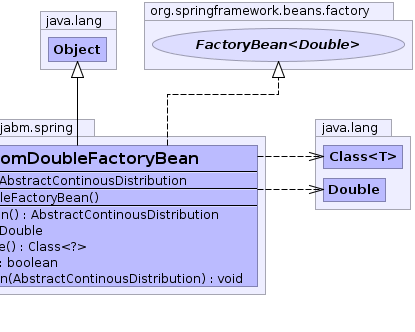

net.sourceforge.jabm.spring.AbstractRandomVariateFactoryBean
net.sourceforge.jabm.spring.RandomDoubleFactoryBean
net.sourceforge.jabm.spring.AbstractRandomVariateFactoryBean
net.sourceforge.jabm.spring.RandomDoubleFactoryBean
|
|||||||||
| PREV CLASS NEXT CLASS | FRAMES NO FRAMES | ||||||||
| SUMMARY: NESTED | FIELD | CONSTR | METHOD | DETAIL: FIELD | CONSTR | METHOD | ||||||||
java.lang.Object
public class RandomDoubleFactoryBean
A Spring factory bean which generates random Double values from the specified probability distribution. This can be used to auto-magically configure properties as random variates in a Monte-Carlo simulation.
 |
 |
| Field Summary |
|---|
| Fields inherited from class net.sourceforge.jabm.spring.AbstractRandomVariateFactoryBean |
|---|
distribution |
| Constructor Summary | |
|---|---|
RandomDoubleFactoryBean()
|
|
| Method Summary | |
|---|---|
java.lang.Double |
getObject()
|
java.lang.Class<?> |
getObjectType()
|
| Methods inherited from class net.sourceforge.jabm.spring.AbstractRandomVariateFactoryBean |
|---|
getDistribution, isSingleton, setDistribution |
| Methods inherited from class java.lang.Object |
|---|
clone, equals, finalize, getClass, hashCode, notify, notifyAll, toString, wait, wait, wait |
| Methods inherited from interface org.springframework.beans.factory.FactoryBean |
|---|
isSingleton |
| Constructor Detail |
|---|
public RandomDoubleFactoryBean()
| Method Detail |
|---|
public java.lang.Double getObject()
getObject in interface org.springframework.beans.factory.FactoryBean<java.lang.Double>public java.lang.Class<?> getObjectType()
getObjectType in interface org.springframework.beans.factory.FactoryBean<java.lang.Double>
|
|||||||||
| PREV CLASS NEXT CLASS | FRAMES NO FRAMES | ||||||||
| SUMMARY: NESTED | FIELD | CONSTR | METHOD | DETAIL: FIELD | CONSTR | METHOD | ||||||||